BasicDockHider
It's my first tweak that really came on a repo, of course it is not really complicated but hey, you gotta start somewhere
If you did not understood by the title, this tweak is allowing users to hide their dock background or precisely its opacity.
You can get it on the Twickd repo: https://repo.twickd.com (Tweak page)
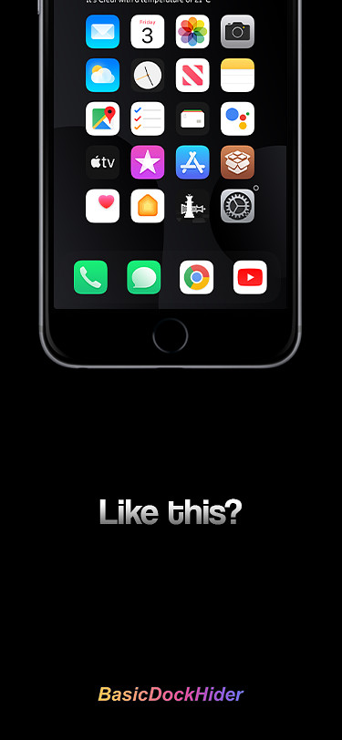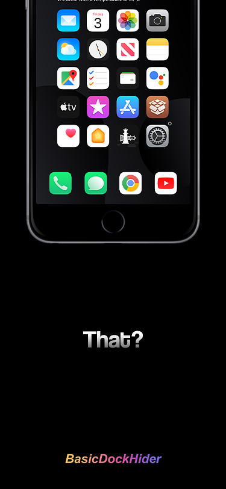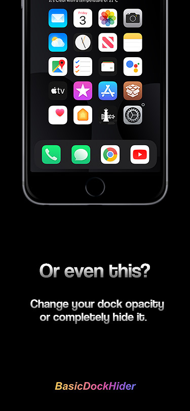
ELB's Website
It's a website that I made for ELB.
It's a "lobby" for Grand Theft Auto V Mods and Cheats, basically. Link here
DisquePlatine
My Spotify botting tool, which is almost fully done (as of what I remember)
It allows user to connect automatically their accounts and play a song with them from all over the world (faking IPs/User-Agents...)
The only part that is not done (as of what I remember again) is the song management (for now you have to start it by yourself and it's not skipping automatically when it has been played enough to count it as a stream)
It's available on my GitHub at this address
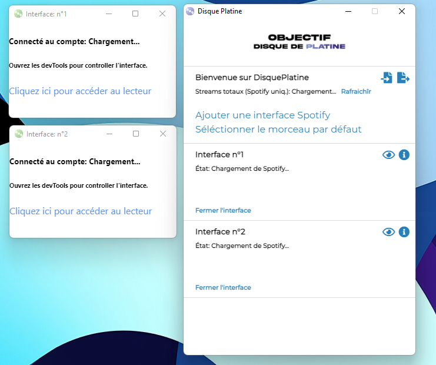
(It does not work on the picture because I did not enter valid accounts for the bot to use.)
EDBruteForce
This is a simple Objective-C tool I made to bruteforce passwords for a given user on EcoleDirecte (Which is a french ENT/VLT)
It's available on my GitHub at this address
(Just saying: I, of course, never used it for something other than testing the program and I don't support anybody using it for whatever reason.)
RLTrader
A simple app to manage your Rocket League inventory. It allows you to get a global view of the values of your items, see if you are making benefits or you are losing money.
This project, unlike lots of other projects of mine, works and is usable (as of mid-2022)
It's available on my GitHub at this address
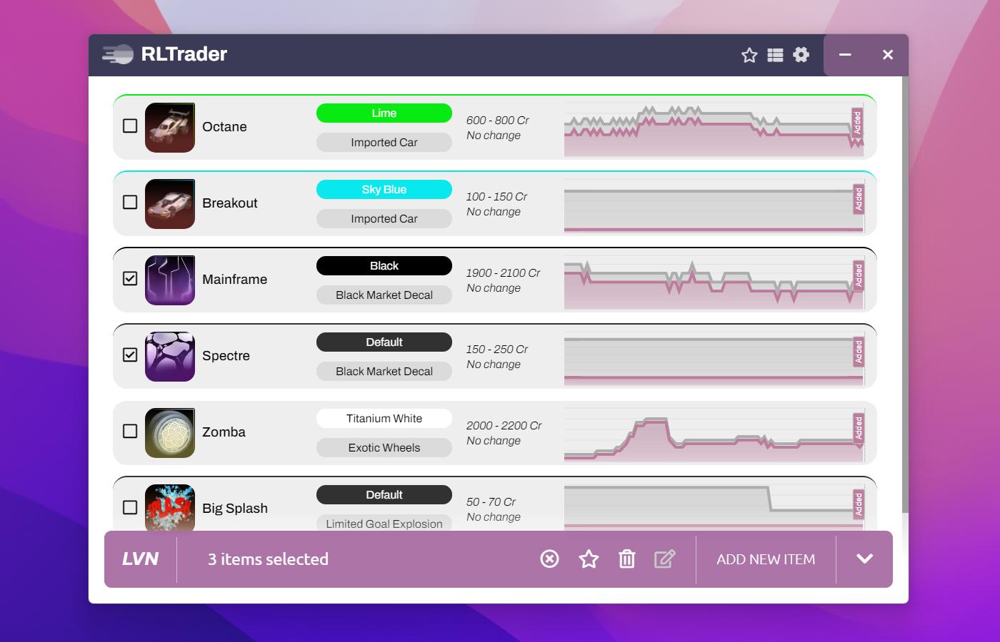
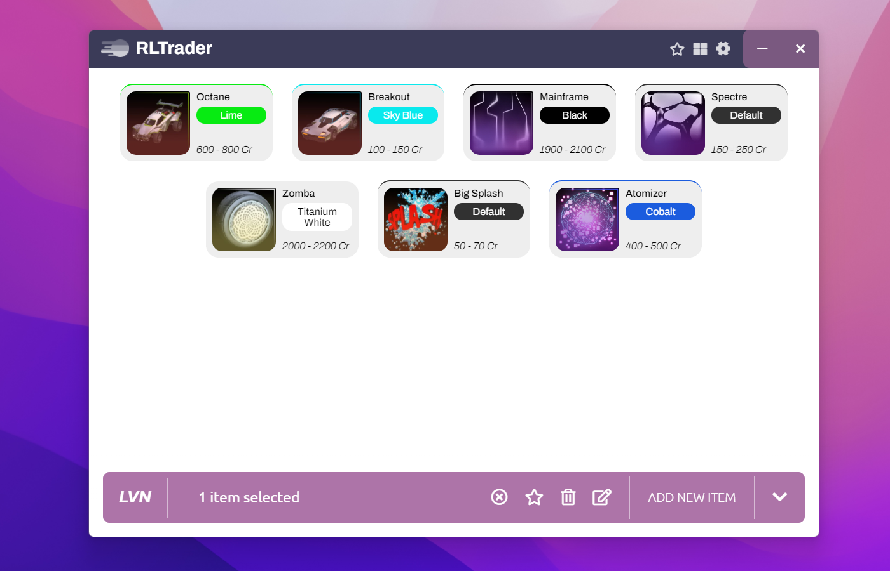
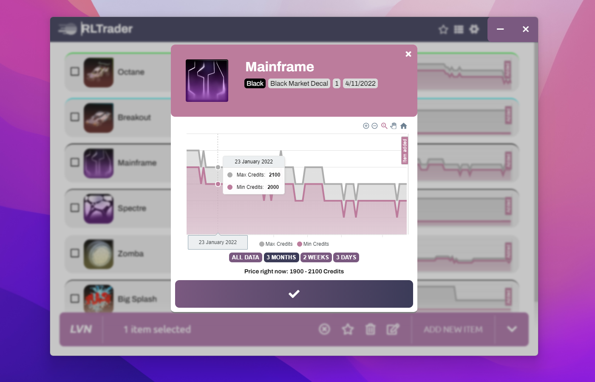
Emer
This was the biggest tweak project that I ever made before I couldn't code anymore on iOS, and it was okay, I can't find any screenshots for now
ETHSwitcher
It's a desktop app that I made on Java and C#, it's only made for my personal use BUT it's open source, so you can modify it to make yours (The Java one has a GUI but it's not stable and the C# is only a Console/Terminal app, I started to work on a C# GUI but never finshed it because the console one is okay for me.)
What does it do ? It's real simple but it can be useful if you have to switch between personal hotspot and your network a lot, for instance
It disables and enables your interfaces to make you switch from network A to network B.
This can be a very big app but I only made it so it responds to what I want it to do
Might make a configurable public version, but it would be more on C#. A BIG hot one.
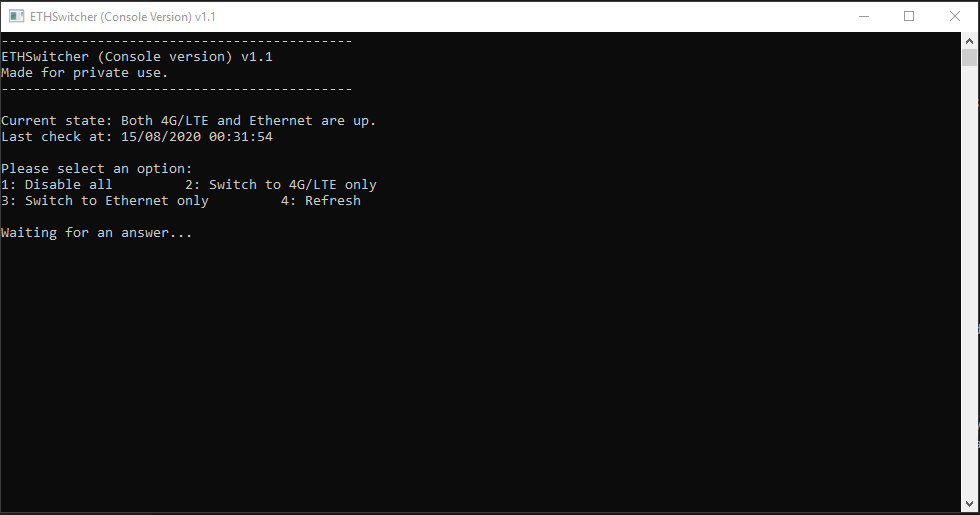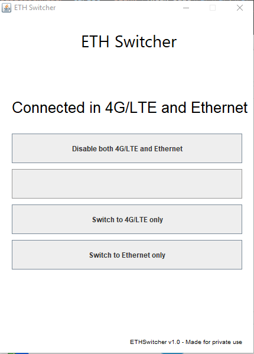
HapticSystem
I will never release this one on a big repo, why ? Just found out that it has already been made. Check Litten's Rose tweak on her repo: https://repo.litten.love
Everything was made so I can release it s0n but no, anyway if you still want it: you can, I can give you the .deb, just ask me on @LivenOff !
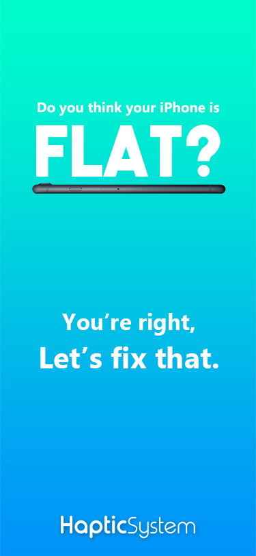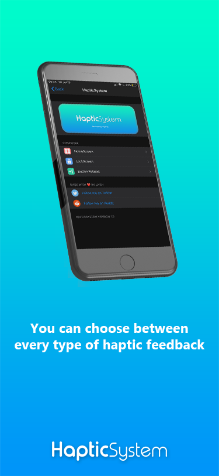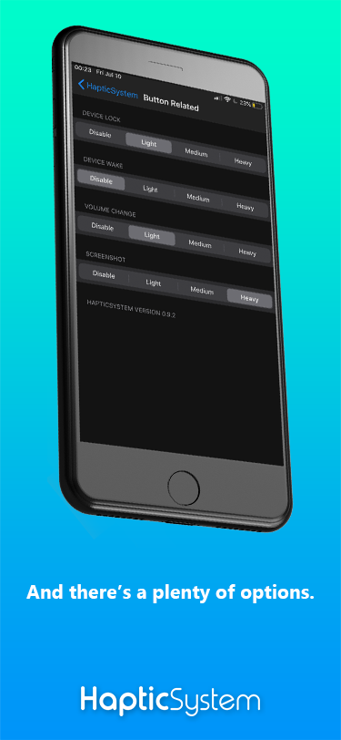
LIG
It's a Java app that was made to simplify iOS icon resizing, with LIG, you can resize your icons to @3x, @2x, ~ipad etc
This project is scraped
That way you can rename potato.png (512px) into potatoLITTLE (128px) & potatoCATCEN.png (400px)
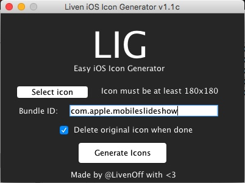
Music for Windows
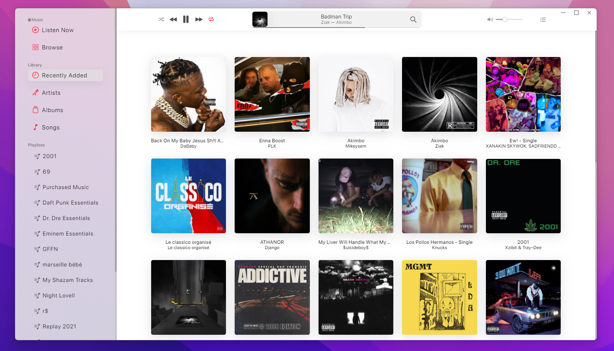
This is one of my biggest projects, so basically, iTunes for Windows is a complete mess, and the music.apple.com is awfully slow. This is why I started an Apple Music app for Windows, it's still WIP, I have to finish the connection system (almost the only thing I need to do before releasing a beta or something) because now you have to manually enter your tokens.
(And it has dark mode, yes)
SlashSlash
SlashSlash is my first iOS widget (for XenHTML), it is a lockscreen clock & date widget.
It does not require XenInfo and is customizable (as you can see in the screenshots below).
This project is scraped, but it works, just compile it: https://github.com/LIVENVARANE/SlashSlash
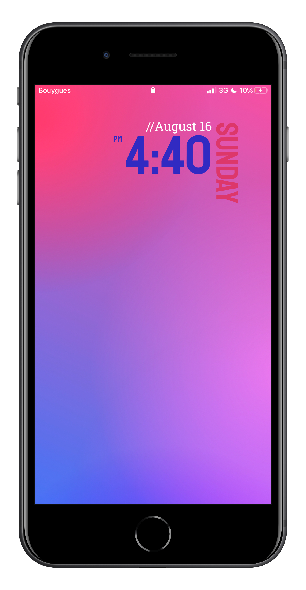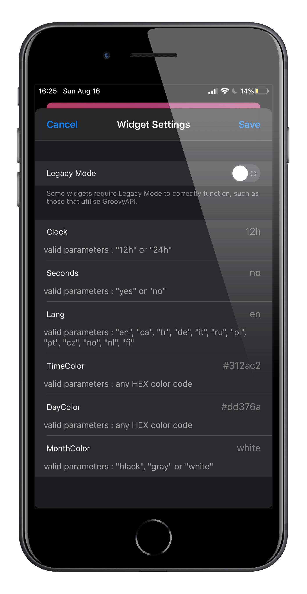
Sowy
Sowy is my first real iOS theme project, its a "calligraphy-style" theme, icons are made with a specific brush.
I only made some icons, and guess what, this project is scraped
Below is the only icons that I ever revealed. There are my base icons for the theme (becauses it's the icons I'm the most satisfied of.)
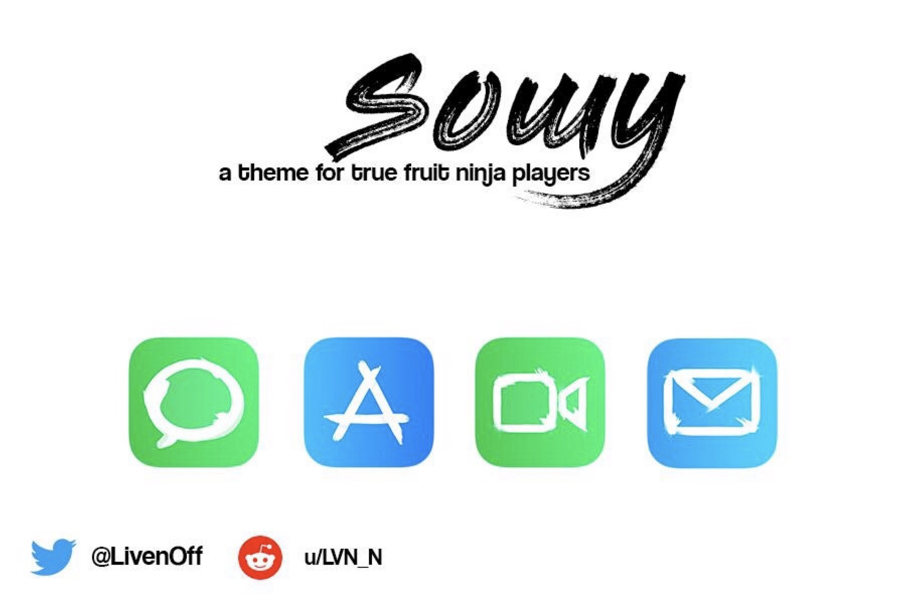
Project Ultima2
This one is a big one.
It all started in the end of 2017, me and some friends started making a Minecraft Server (as every kid at this time). It was a cheap server but I started doing every games in Skript (A simplified Minecraft coding language).
The server was based on the Rush minigame that is played (and still played now) by 50-60% of the French MC community (way more skilled than your bedwars and shit lol). And after almost a year, it closed because I wasn't playing MC anymore.
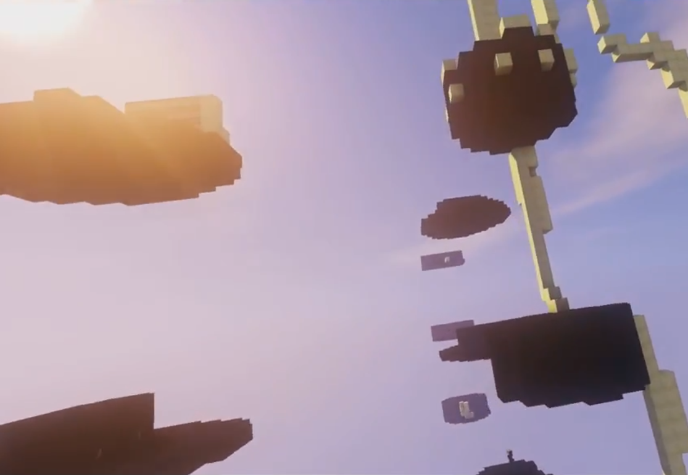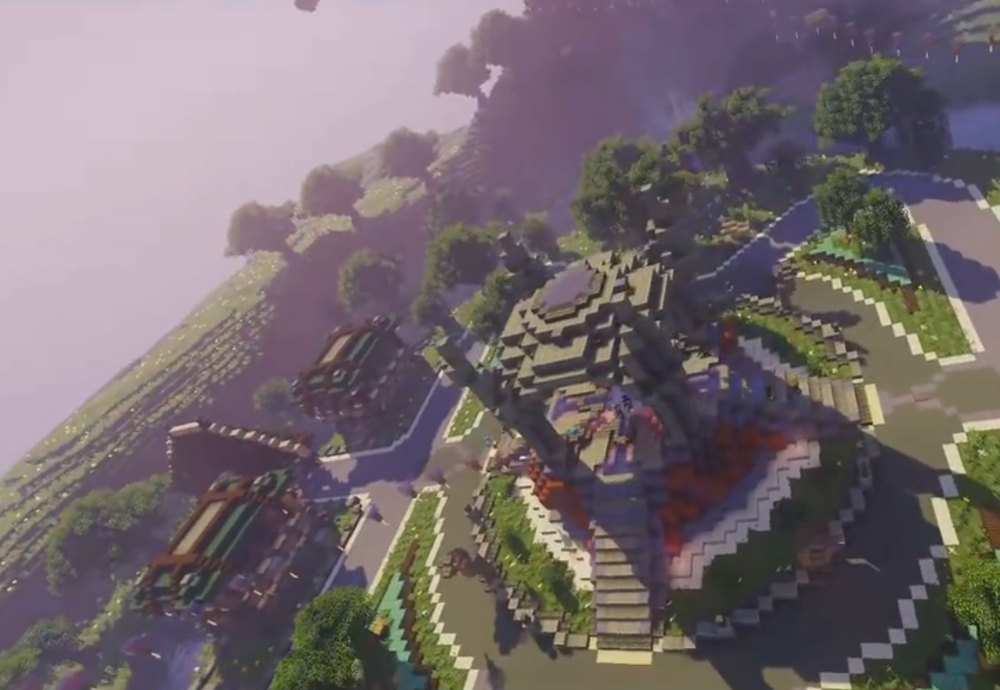
Ultima2 - Restarting from Zero
And there we go, nostalgia hits and me and a friend, in January 2019 (it's been a while) we decide to restart from ZERO, and recreate all but better. Only ProtocolLib as external plugin, every plugin will be made by US. Time flies and the server is almost ready but we dont really wanna keep working on it, idk if it will come a day but with this year of hard-work, we learned a lot, was fun.
Not only a server, a whole network
That's right, I worked myself a lot on the website. But this one is special, it is the center of the network, the plans where to have synchronized accounts between MC, the Website and the Discord Server (Spoiler: it is done). With that, you can chat with everyone on every platform, your IG rank doesn't only give you IG perks, but also Discord rewards and websites things. We can (with webhooks and a JSONAPI) control the network from the Website's admin panel, we can ban members from the network, write news, open/close/whitelist users etc...
All of this data where stored and synchronized between the website database and a MC plugin entierly made made by @Thalrod_
Current project progress:
Website : 90%
Discord bot and webhooks : 30%
Minecraft server : 80%
Minecraft webhooks and JSONAPI : 100%
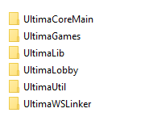
EDIT: My contributions on this project are now open source! -> Click here
Veddy
This theme was supposed to be released, but I never did it for some reason. It is 99% done, and if you want to use it, just tell me on Twitter: @LivenOff, and I will eventually get motivated to finally release it
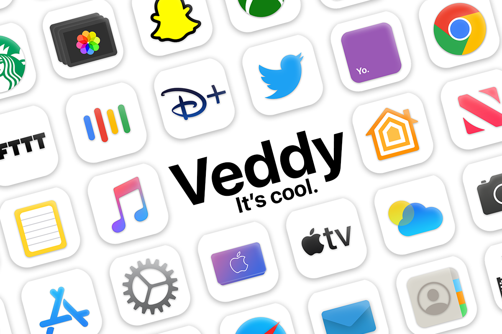
WazeDecoy
PROJECT UPDATE: I will eventually release a GUI version of WazeDecoy, with that you will be able to place any decoy anywhere.
This is a C# program that, yes, place decoys on Waze. With that I place police around my house so people "slow down", at the beggining it was quite a joke but it turned into a reality
To achieve that, I used web proxy software to intercept Waze requests with its Protobuf API (www.rtproxy.waze) and I basically copied the login commands and the decoy placing command. No API token or anything, and I can also place decoy everywhere I want and create virtual traffic jams without being there.
This flaw is really powerfull and can lead to false informations in the app, or just by totally flooding the Waze map by fake reports.
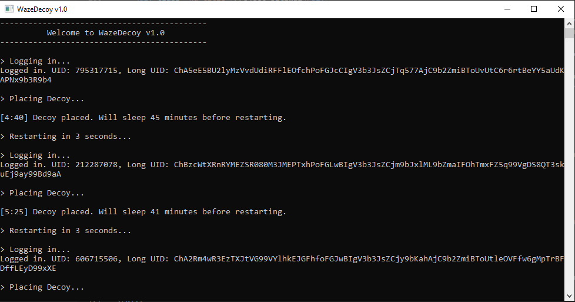
And I installed the program on a Raspberry Pi Zero (on raspbian buster) to make it run 24/7. (It's still C#, I used Mono to run it on Raspbian.)
Error
An error happened. Please contact me on Twitter so I can fix that: @LivenOff
Welcome to my projects page
Please select a category, it's cold out there.